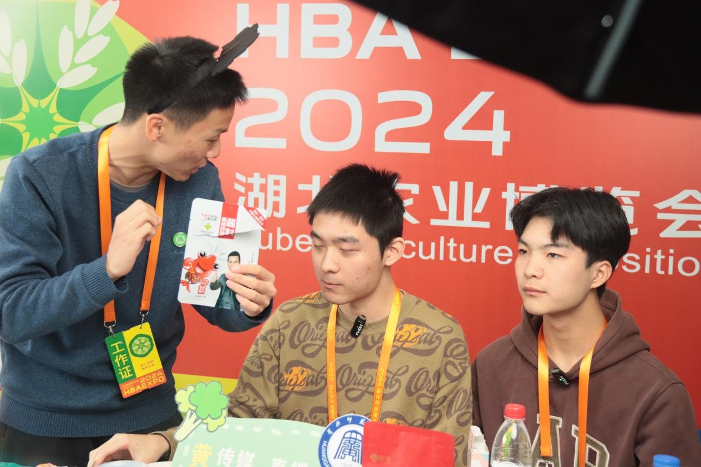
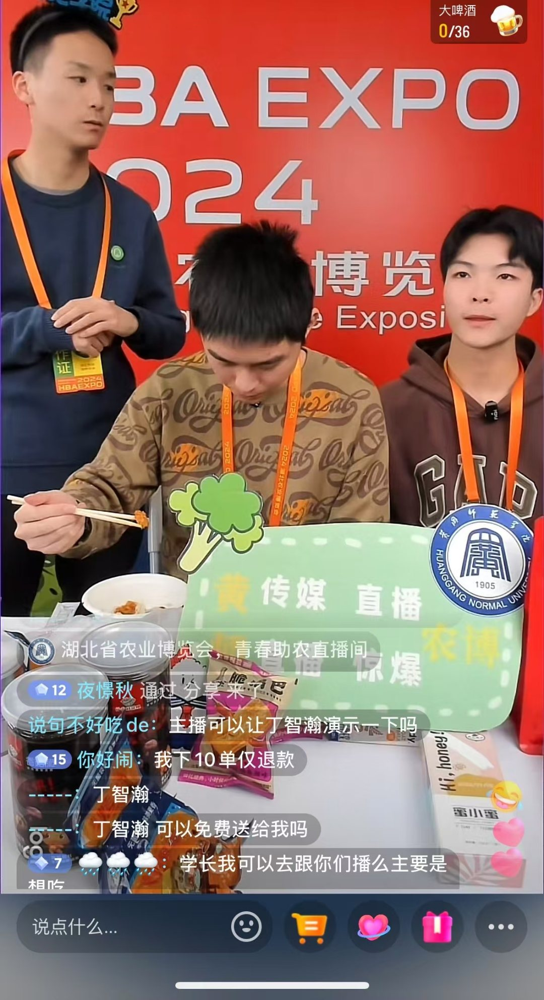
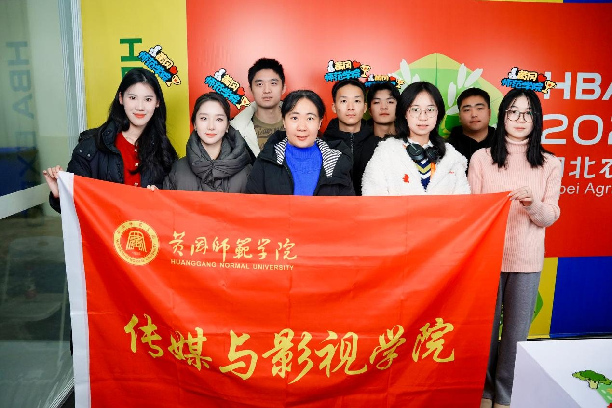
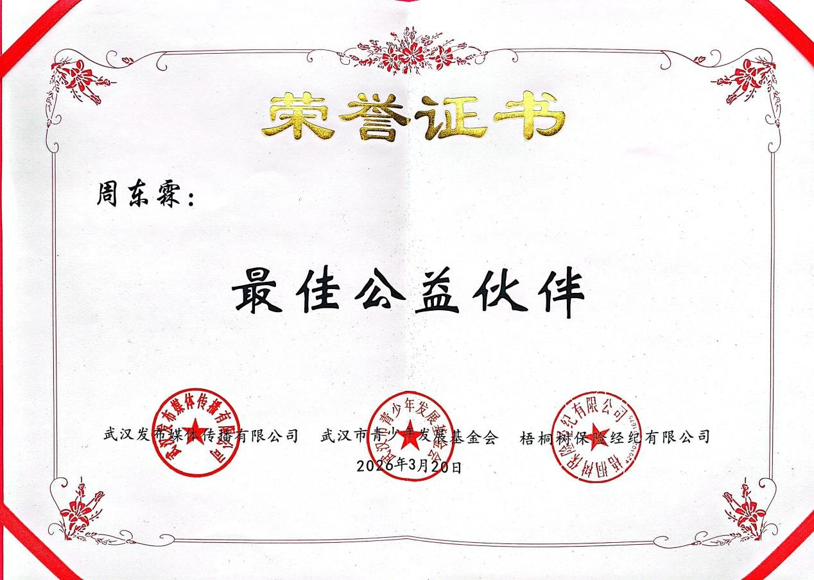
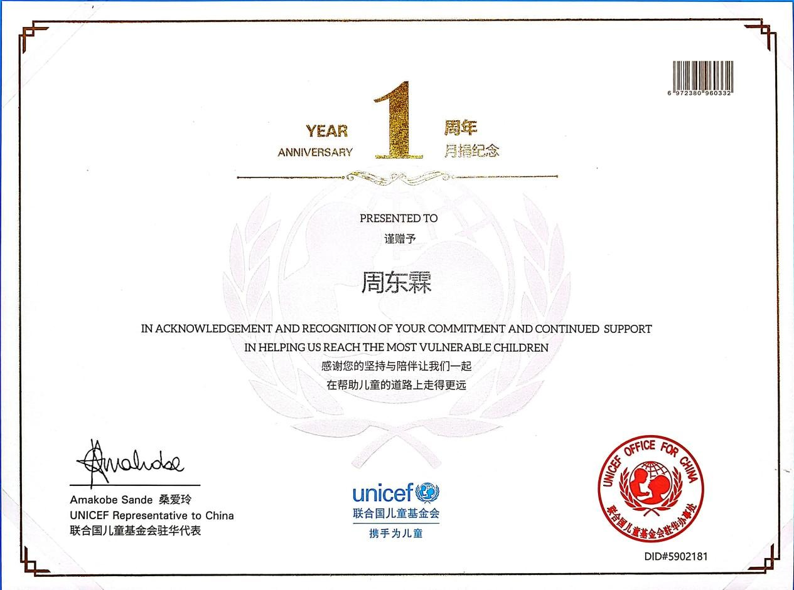
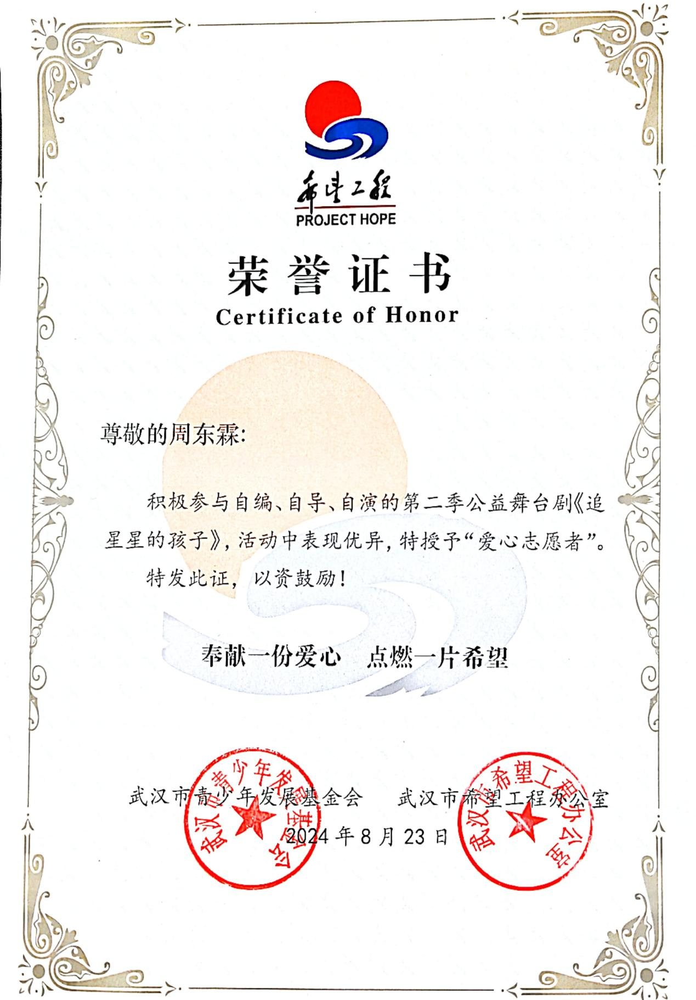
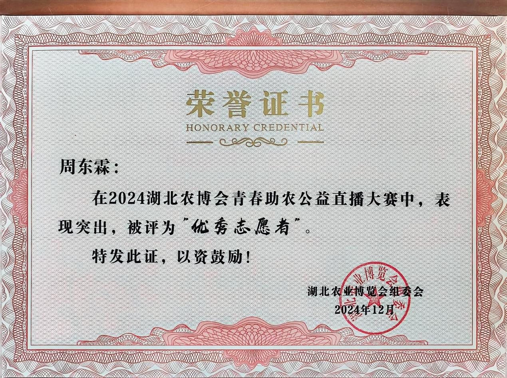

公益事迹
运用传媒专业能力投身公益，用镜头和笔触传递温暖与力量
"桐星守护"关爱孤独症儿童公益行动
作为大学生代表长期参与由梧桐树保险经纪有限公司发起的"桐星守护"公益行动，聚焦孤独症儿童群体开展形式多样的公益活动，用持续的陪伴与切实的帮扶，为患有孤独症的孩子们照亮成长之路
媒体赋能、助力乡村振兴
本科期间扎根大别山，运用媒体专业知识助力乡村振兴。2024年12月20日，带领团队参加湖北农业博览会助农直播高校专场，借直播为农产品打开销路，创造"一秒成交 7 单"的成绩，获"优秀志愿者"称号

湖北农业博览会助农直播现场，介绍农产品

助农直播间截图

助农直播团队合影
公益证书与奖项

2026年获"最佳公益伙伴"称号

2025年起向联合国儿童基金会定期捐款，获一周年纪念证书

获孤独症儿童主题舞台剧《追星星的孩子》"爱心志愿者"称号

获湖北农业博览会助农直播"优秀志愿者"称号